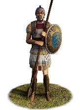
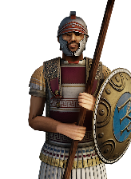

RTR: Imperium Surrectum
RTR: Imperium SurrectumEpirote Phalangites


Class: spearmen · Category: infantry · Men per unit: 60
Description
These men of Epeiros have been trained to wield the sarissa (a 4-6m long pike) in a Macedonian-style phalanx. On their shields they proudly display Epirote devices such as the monogram of Pyrrhos or the thunderbolt of Zeus. Others show common Hellenistic symbols such as the Vergina sun, associated with the Argead dynasty of Macedonia (the family of Philip II and Alexander the Great), which was related to the Aiakid dynasty of Epeiros. As additional armour they wear bronze Thracian, pilos, or konos helmets, linothorakes to protect their torso, as well as bronze greaves on their legs. Ideally, these men are used to hold the line while you attack the enemy flanks with more agile units. Though lacking the skill of the Macedonian Chalkaspides (‘Bronze Shields’) or even of your own Ambrakiote phalangites, these Epirote Phalangites are a readily available medium pike unit that you can depend upon.
HISTORICAL BACKGROUND:
This unit is made up of men hailing from the major tribes of Epeiros. At the battle of Asculum (279 BC) against the Romans, the Epeirote king Pyrrhos (319-272 BC) fielded between 40,000 and 70,000 soldiers (Front. III. 21; Dion. Hal. XX.1.8), most of whom were local allies and mercenaries. Only 12,000 were those left of the original 20,000 infantry who had crossed over to Italy with him (Sekunda, The army of Pyrrhus of Epirus (2019), p. 38). These 12,000 would have included Ambrakiotes, Epirotes, Macedonians, and other Greeks. The Epirotes in turn were made up of Molossians, Chaonians, and Thesprotians (Dion. Hal. XX.1.2). The Epirote people consisted of 14 tribes, of which the Molossians, Chaonians, and Thesprotians were the most significant (Strab. VII.7). These three main tribal groups are collectively represented by this unit. The phalanx from Ambrakia is always mentioned separately from the Epirote ‘tribal’ phalanx, as that city was still very much separate from Epirus as a whole, despite being its capital.
Pyrrhos deployed his Epirote infantry in the centre of the battleline, with the Macedonians, Ambrakiotes, Tarantines, other Greeks, and Italic mercenaries being positioned on the flanks (Dion. Hal. XX.1.2). From this positioning we can infer that the Epirotes were considered reliable but not elite. The sources do not explicitly mention how each regiment fought, but it is fair to assume that the Tarantines, Macedonians, and Epirotes mostly fought as phalangites, whereas the Italic and Greek contingents would have fought in their own traditional styles. If this was indeed the case, then it would seem Pyrrhos alternated phalangites with non-phalangites in his battleline. The best phalangites in Pyrrhos’ army were likely not his Epirotes, but the Macedonian infantry who were gifted to him by Ptolemy Keraunos of Macedon, though some scholars have argued that these men could also have been provided by Ptolemy Philadelphos of Egypt, instead (Adams, The unbalanced relationship between Ptolemy II and Pyrrhus of Epirus (2008), pp. 91-93).
Equipment-wise, the Epirote phalangites in RIS are outfitted with bronze helmets of the Thracian, pilos, or konos types. The latter are represented on the coins that Pyrrhos minted in the 2nd quarter of the 3rd century BC (BMC 36; BMC 37). These coins also show patterns typical for Macedonian-style phalanx shields, incised with half-circles, crescent, dots, and a symbolic centre, depicting the monogram of Pyrrhos or the thunderbolt of Zeus (see coin examples above; for thunderbolt: BMC 44). Remains of such shields were also found at the ancient Epirote sanctuary of Dodona (now in the Archaeological Museum of Ioannina, inv. nr. 1951).
Stats
| Rank in roster | Rank in roster | Rank in roster | Rank in roster | ||||||||
|---|---|---|---|---|---|---|---|---|---|---|---|
| Men per unit | 60 | █████████· 88% | Attack | 19 | ██████████ 97% | Charge bonus | 1 | █········· 4% | Defence | 24 | ███······· 27% |
| · armour | 10 | ██████···· 55% | · defence skill | 11 | █········· 6% | · shield | 3 | ████······ 38% | Morale | 10 | ███······· 30% |
| Discipline | Normal | Training | Highly trained | Recruitment cost | 1,843 dn | ████······ 41% | Upkeep per turn | 675 dn | ██████···· 60% | ||
| Turns to recruit | 2 |
Weapons
| Primary | Secondary | Primary | Secondary | Primary | Secondary | Primary | Secondary | ||||
|---|---|---|---|---|---|---|---|---|---|---|---|
| Attack | 19 | 4 | Charge bonus | 1 | 1 | Type | melee · blade | melee · simple | Damage | piercing | piercing |
| Properties | Long spear (bonus against cavalry, penalty against infantry) · +8 attack against cavalry · very long pike (phalanx) | — |
Defence
| Primary | Secondary | Primary | Secondary | Primary | Secondary | Primary | Secondary | ||||
|---|---|---|---|---|---|---|---|---|---|---|---|
| Total | 24 | — | Armour | 10 | — | Defence skill | 11 | — | Shield | 3 | — |
Condition and terrain
| Hit points | 1 | Ground: scrub / sand / forest / snow | -4 / -1 / -6 / -1 | Charge distance | 0 | Formations | Square · Phalanx |
Technical stats
| Time between blows (primary / secondary) | 2.5 s / 2.5 s | Extra fatigue in hot climates | 1 | Collision mass per man (1.0 is normal) | 1.14 | Spacing between men: close / loose | 1 × 1 m / 2 × 2.4 m |
| Default ranks | 5 |
In battle: Can sap · Good stamina
Who can recruit it
A core roster unit for one faction, which can raise it anywhere it holds the right building:
Exactly what a settlement must have, route by route (3)
| Building | Also requires | Building | Also requires | Building | Also requires | ||
|---|---|---|---|---|---|---|---|
| Indirect Rule | Garrison Building or Tier 1 Military Industrial Complex · Tier 1 Colony | Direct Rule | Garrison Building or Tier 1 Military Industrial Complex · Tier 1 Colony | Homeland | Garrison Building or Tier 1 Military Industrial Complex |